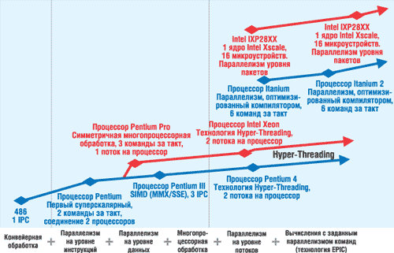

Алексей Борзенко
Уже сегодня в корпорации Intel определяют и проектируют компьютерные платформы будущего, которые должны существенно изменить сами вычисления, а также интерфейсы и требования к инфраструктуре. О так называемой "Платформе 2015" впервые рассказал на Форуме разработчиков Intel в Сан-Франциско весной этого года Джастин Раттнер, директор Intel Corporate Technology Group. Долговременное видение развития трех основных элементов платформ - вычислений, интерфейсов и инфраструктуры, а также архитектурные инновации и фундаментальные знания, которые движут это развитие, - вот что в корпорации называют "Платформой 2015". Таким образом, данное понятие включает в себя не только видение аппаратных и программных средств будущего, но и оценки типовых рабочих нагрузок, которые и задают требования к этим средствам.
Уже сегодня с полной уверенностью можно сказать, что процессоры и платформы Intel будут выделяться не только самой по себе высокой производительностью, но и богатыми вычислительными и коммуникационными возможностями, средствами управления питанием, повышенной надежностью, безопасностью и управляемостью, а также полной интеграцией со всеми остальными компонентами платформы.
Полупроводниковые технологии и производство
Не секрет, что микропроцессоры в настоящее время переживают переломный момент: грядут, может быть, самые значительные преобразования с момента их появления. Необходимы значительные их усовершенствования, в том числе чтобы соответствовать прогнозам, вытекающим из закона Мура. Дальнейшее наращивание количества транзисторов на кристалле, конечно, жизненно важно, но для предстоящего скачка необходим также всесторонний пересмотр основ - технологических процессов, архитектуры и ПО. Фактически этот пересмотр уже происходит в Intel.
Ожидается, что до 2015 г. и далее полупроводниковая производственная КМОП-технология будет развиваться теми же темпами, что и сейчас. В этом году началось производство кристаллов по технологии 65 нм, на 2007 г. намечен переход на 45-нм процесс, на 2009-й - внедрение 32-нм технологии, а в 2011 г. настанет черед технологического процесса 22 нм. По имеющейся информации, в Intel уже есть конкретные научно-технические разработки, которые позволят реализовать все эти планы. Вплоть до 2020 г. корпорация cможет создавать транзисторы, работающие по современной схеме - с электродами и затвором между ними. К тому времени, однако, все элементы транзистора достигнут атомарных размеров, и уменьшать их дальше будет просто невозможно. Следовательно, уже сейчас необходимо искать новые подходы.
Один из таких новых подходов - организация передачи сигнала на уровне элементарных частиц, путем спиновых волн. В лабораториях Intel сейчас разрабатываются идеи, которые будут воплощены в кристаллах только лет через десять. Например, одна чисто теоретическая идея заключается в многократном использовании электронов. Как известно, в современных архитектурах электроны перемещаются от истока к стоку, а затем теряются. При утилизации, по мнению специалистов Intel, электрон может быть просто перенесен в другое место. Следовательно, станет возможно выполнять множество операций, не теряя электронов. Другая альтернатива - использование углеродных и кремниевых нанотрубок. Транзисторы, изготовленные из таких материалов, имеют сопоставимые размеры. Так, диаметр углеродных нанотрубок составляет 1-2 нм, но в экспериментальных транзисторах исток и сток расположены по их длине. Это позволяет повысить быстродействие и уменьшить потребляемую энергию, однако размер сократить не удастся.
Эксперты полагают, что такие экзотические структуры, какими пока представляются углеродные нанотрубки, могут найти применение в технологии КМОП не столько для ускорения темпов миниатюризации, сколько для повышения производительности устройств или, возможно, упрощения их изготовления. Следует также иметь в виду, что даже если для цифровой логики будет изобретено принципиально иное средство перемещения электронов, возможности его масштабирования для повышения плотности и производительности не зайдут много дальше пределов технологии КМОП, главным образом из-за ограничений, налагаемых требованием отвода тепла.
Тенденция появления новых материалов и новых структур будет продолжаться. В качестве примеров технологий, находящихся в стадии разработки, можно назвать специальные диэлектрики (high-k/metal gate) и транзисторы с трехмерным затвором (tri-gate transistors). Далее планируется активизировать исследования в области транзисторов III-V, углеродных нанотрубок и кремниевых нанопроводников. Цель всех этих исследований - дальнейшее увеличение скорости работы устройств и уменьшение их размеров, улучшение управления питанием и сокращение потребляемой мощности.
Кроме того, интеграция между архитектурой кристаллов и производственной технологией позволит достичь еще большей плотности - на одном кристалле будут располагаться миллиарды транзисторов. Этот подход весьма важен, поэтому в процессе создания микропроцессоров и платформ будущего разработчики и технологи должны сотрудничать очень плотно.
Многопроцессорная обработка на уровне кристалла
В корпорации считают, что процессор 2015 г. будет оказывать непосредственное влияние на развитие индустрии и полностью отвечать технологическим тенденциям, которые просматриваются уже сегодня. Такие тенденции, как глобализация и высокопроизводительные вычисления, найдут прямое отражение в вычислительных платформах будущего. На основе анализа сегодняшних потребностей и тенденций эксперты Intel полагают, что архитектура процессоров и платформ должна двигаться в направлении виртуализованной, реконфигурируемой микропроцессорной архитектуры на уровне кристалла с большим количеством ядер, богатым набором встроенных вычислительных возможностей, подсистемой внутрикристальной памяти большого объема и интеллектуальным микроядром.
Сегодня Intel продолжает лидировать в одном из важнейших направлений архитектуры микропроцессоров - повышении уровня параллелизма для увеличения производительности (рис. 1). Начав с суперскалярной архитектуры первого процессора Pentium и многопроцессорной обработки, в середине 90-х гг. в Intel продолжили развитие в этом направлении, добавив в процессоры такие возможности, как переупорядоченное исполнение инструкций, а затем представив процессор Pentium 4 с технологией Hyper-Threading (HT).
|  |
| Рис. 1. Рост параллелизма в архитектурах Intel.
|
Эти усовершенствования открыли путь для следующего важного шага - перехода от единственного монолитного ядра к множеству ядер на одном кристалле (рис. 2). Корпорация уже начала серийный выпуск платформ на базе многоядерных процессоров. Сейчас эти платформы построены на базе двухъядерных процессоров, но в процессе развития число ядер будет становиться все больше.
| Рис. 2. Двухъядерный процессор работает эффективнее.
|
Производительность традиционных одноядерных процессоров до сих пор в основном повышалась за счет увеличения тактовой частоты (до настоящего времени тактовая частота определяла около 80% производительности). Но постоянное повышение частоты упирается в ряд фундаментальных физических барьеров. Во-первых, с уменьшением размеров кристалла и с повышением частоты возрастает ток утечки транзисторов. Это ведет к повышению потребляемой мощности и выделения тепла. Во-вторых, преимущества более высокой тактовой частоты частично сводятся на нет из-за задержек при обращении к памяти, так как время доступа к памяти не соответствует возрастающим тактовым частотам. В-третьих, для некоторых приложений традиционные последовательные архитектуры становятся неэффективными с возрастанием тактовой частоты из-за узкого места архитектуры фон Неймана - ограничения производительности в результате последовательного потока вычислений. При этом возрастают резистивно-емкостные задержки передачи сигналов, что становится дополнительным узким местом, связанным с повышением тактовой частоты. Следовательно, необходимо добиваться повышения производительности другими средствами, отличными от повышения тактовой частоты больших монолитных ядер.
Разрешить описанную выше проблему позволяет разделение задачи на множество одновременных операций и их распределение между множеством небольших вычислительных устройств. В отличие от последовательного выполнения операций с максимально возможной тактовой частотой, процессоры Intel с многопроцессорной обработкой на уровне кристалла будут обеспечивать весьма высокую производительность при более приемлемых тактовых частотах благодаря параллельному выполнению множества операций (рис. 3). Архитектуры Intel CMP (Chip-level MultiProcessing) смогут обойти проблемы, вызванные повышением тактовой частоты (увеличение тока утечки, несоответствие производительности процессора и памяти, проблемы узкого места архитектуры фон Неймана). Многоядерная архитектура также позволит снизить влияние резистивно-емкостных задержек.
| Рис. 3. Двухъядерный процессор с технологией НТ оперирует четырьмя потоками одновременно.
|
В течение нескольких последующих лет в корпорации планируется выпустить процессоры, которые будут содержать множество ядер - в некоторых случаях даже сотни. Специалисты корпорации считают, что архитектуры Intel с поддержкой многопроцессорной обработки на уровне кристалла представляют собой будущее микропроцессоров, потому что именно такие архитектуры позволяют достичь огромных уровней производительности и в то же время обеспечить эффективное управление питанием и эффективный режим охлаждения.
Стоит еще раз подчеркнуть, что архитектуры CMP - это не только путь к огромному росту производительности, но и возможность свести к минимуму потребление электроэнергии и теплоотдачу. В отличие от больших, энергоемких вычислительных ядер с высокой теплоотдачей, кристаллы Intel CMP будут активизировать только те ядра, которые необходимы для выполнения текущей задачи, тогда как остальные будут отключены. Такое управление вычислительными ресурсами позволяет кристаллу потреблять ровно столько электроэнергии, сколько нужно в данный момент времени.
Разрабатываемые архитектуры CMP также способны обеспечить специализированные функции и уровень адаптивности, необходимые для платформ будущего. Кроме ядер общего назначения, эти процессоры будут включать специализированные ядра для выполнения различных типов вычислений, таких, как обработка графики, алгоритмы распознавания речи и обработка коммуникационных протоколов.
Более того, Intel будет разрабатывать процессоры, допускающие динамическую реконфигурацию ядер, межкомпонентных соединений и кэш-памяти, чтобы обеспечить соответствие многообразным и изменяющимся потребностям. Такая реконфигурация может выполняться производителем процессора (чтобы перенастроить один и тот же кристалл для использования в различных сегментах рынка), OEM-поставщиком (чтобы настроить процессор для систем разного типа) и даже автоматически в реальном времени, чтобы поддерживать соответствие изменяющимся потребностям рабочей нагрузки "на лету".
В процессе развития процессоров и платформ к 2015 г. некоторые микропроцессоры Intel будут оснащаться внутрикристальными подсистемами памяти, объемы которых будут достигать нескольких гигабайт. Такая сверхоперативная память позволит заменить обычную оперативную память во многих вычислительных устройствах. Кэш-память будет реконфигурируемой; можно будет динамически перераспределять память для разных ядер. Некоторые области памяти можно будет выделять определенным ядрам или предоставлять для совместного использования группами ядер либо всеми ядрами глобально, в зависимости от потребностей приложений. Такая гибкая возможность изменения конфигурации необходима для того, чтобы ликвидировать узкое место производительности, когда множество ядер будет соперничать за доступ к памяти.
Виртуализация
Сегодня перед отраслью стоит задача продолжить создание все более компактных, тонких и быстрых компьютерных систем, а также найти лучшие способы избавления от сложностей компьютерных технологий. Большие усилия направлены на решение проблем безопасности и управления информацией и устройствами, для того чтобы сделать компьютеры более гибкими и расширить их распространение, а также добиться, чтобы компьютерные системы всегда и везде были доступны пользователям. Так, концепция виртуализации платформ способна обеспечить путь в будущее для мощных, автономных и надежных компьютерных систем. Для работы микропроцессоров будущего потребуется несколько уровней виртуализации. Например, виртуализация необходима для того, чтобы скрыть сложную структуру аппаратного обеспечения от соответствующего ПО. Сама ОС, ее ядро и ПО не должны "задумываться" о "хитром" устройстве платформы - о множестве ядер, специализированном аппаратном обеспечении, о множестве модулей кэш-памяти, средствах реконфигурирования и т. п. Наоборот, они должны "видеть" процессор как набор унифицированных виртуальных машин с глобальными интерфейсами. Необходимый уровень абстракции должна предоставить именно виртуализация.
Виртуализацию платформ можно определить как создание логически разделенных вычислительных систем, которые работают на реальных платформах. Если применить виртуализацию к дисковой памяти и серверам, концепция виртуализации платформ идет глубже и включает все уровни системы - от прикладных программ и ОС до компонентов платформы, процессоров и средств связи (рис. 4). Виртуальные платформы легко воспринимаются пользователями и работают так же, как обычные компьютеры. Благодаря тому, что они абстрактны и отделены от физических платформ и друг от друга, виртуальные платформы обеспечивают простую переносимость и в высшей степени интеллектуальное функционирование и способны скрывать от пользователя свою сложность, в то же время повышая надежность системы. Виртуализация позволяет создавать менее сложные системы, превращая компьютеры в более управляемые объекты. Кроме того, такое разделение на части обеспечивает больший уровень безопасности систем, сетей и приложений благодаря изоляции потенциально опасных подсистем от системных ресурсов низкого уровня и от других виртуальных платформ.
| Рис. 4. Виртуализация используется на каждом уровне платформы.
|
С появлением технологии виртуализации многие ИТ-организации получили новые способы для развертывания своих систем и приложений и для управления ими. Например, виртуализация серверов обеспечивает гибкую и защищенную консолидацию множества ОС и приложений на единой платформе. Это помогает предотвратить быстрое разрастание серверного парка, повысить степень полезного использования ресурсов, упростить ИТ-инфраструктуру, снизить расходы на управление. В сочетании с инструментами для быстрого развертывания ПО виртуализация также позволяет организовать быстрое и динамичное управление аппаратными ресурсами, чтобы оперативно реагировать на изменения рабочей нагрузки. Эти возможности могут принести существенную выгоду многим компаниям, и в течение ближайших нескольких лет ожидается их широкое распространение. Так, согласно прогнозу IDC, если в 2003 г. 8% проданных серверов были оснащены средствами для развертывания и виртуализации, то к 2007 г. их доля вырастет до 40%.
Типичная ИТ-организация тратит 70-80% своего бюджета только на управление системами и приложениями. Одна из причин этих расходов кроется в типичном центре обработки данных - большое количество серверов с низкой степенью использования. В прошлом в ИТ-организациях существовала тенденция, когда на каждом сервере работало только одно приложение. Благодаря доступности серверов стандартной архитектуры эта стратегия была экономически оправданной, упрощала развертывание и позволяла избежать возможных конфликтов ПО. Однако, по ряду оценок, за последние 10 лет количество серверов возросло примерно в 150 раз, соответственно, увеличились и расходы на их сопровождение. Средняя производительность серверов также выросла, сегодня они стали гораздо мощнее, чем 10 лет назад. Виртуализация поможет получить преимущества от этой дополнительной мощности за счет консолидации множества приложений и ОС на единой платформе. Это повысит степень полезного применения серверов, а также упростит сопровождение и снизит расходы на электропитание и охлаждение.
Сегодняшние решения также обеспечивают гибкое распределение ресурсов, чтобы справиться с неожиданными изменениями рабочей нагрузки. Благодаря этим возможностям организации скоро поймут, что они смогут сократить свои расходы, связанные с компьютерами (как капитальные, так и эксплуатационные), и в то же время существенно повысить маневренность центров обработки данных.
Технология Intel Virtualization, ранее известная как Vanderpool, предоставляет аппаратную поддержку, назначение которой - повысить эффективность сегодняшних решений для виртуализации, реализованных программно. Это расширение архитектуры Intel поможет компаниям:
- сократить расходы и риски при внедрении серверных решений для виртуализации;
- повысить надежность, работоспособность и защищенность приложений, работающих в виртуальных разделах;
- улучшить взаимодействие с имеющимся ПО.
Технология Intel Virtualization также упростит разработку ПО для виртуализации, что будет способствовать скорейшему внедрению инноваций. В настоящее время Intel сотрудничает с ведущими производителями, чтобы ускорить выпуск ПО для виртуализации нового поколения, которое обеспечит эффективное использование этих новых расширений архитектуры. Виртуализация - развивающаяся технология, и корпорация берет на себя обязательства включать самые передовые возможности виртуализации в архитектуру Intel. Эти возможности будут дополнять ряд других инноваций для платформ Intel, нацеленных на решение некоторых наиболее важных сегодня ИТ-задач.
Многоядерная архитектура платформ Intel в сочетании с Virtualization Technology позволит создавать виртуальные независимые разделы ПО с обработкой на отдельных ядрах процессора. Таким образом, пользователи смогут создавать уникальную программно-аппаратную конфигурацию в рамках одного сервера и/или ПК для решения любых специализированных задач.
Преимущества виртуализацииВиртуализация обеспечивает высокий уровень работоспособности и безопасности за счет таких ключевых возможностей, как локализация неисправностей, гибкая обработка отказов и разные уровни безопасности. Как известно, большинство отказов приложений вызвано ошибками ПО. Виртуализация обеспечивает логическое разделение виртуальных разделов, поэтому программный сбой в одном разделе никак не влияет на работу приложения в другом разделе. Логическое разделение также позволяет защищаться от внешних атак, что повышает безопасность консолидированных сред. Виртуальные разделы можно настроить так, чтобы обеспечить автоматическую обработку отказов для одного или нескольких приложений. Благодаря средствам поддержки высокой степени работоспособности, заложенным сейчас в платформы на базе процессоров Itanium 2 и Xeon MP, требуемый уровень услуг часто можно обеспечить, предусмотрев аварийный раздел на той же платформе, где работает основное приложение. Если требуется еще более высокий уровень работоспособности, аварийный раздел можно разместить на отдельной платформе. Для каждой виртуальной машины можно установить разные настройки безопасности. Это обеспечит организациям высокий уровень контроля за пользователями, а также гибкое распределение административных привилегий. Важнейшее преимущество виртуализации заключается еще и в том, что она упрощает миграцию приложений на новые платформы. Вместо миграции приложения на новую ОС его вместе с имеющейся ОС можно разместить в виртуальном разделе новой платформы, что не требует изменений в ПО. Эта стратегия обычно используется для того, чтобы продлить срок службы существующих приложений с относительно небольшими расходами и с меньшими рисками. Похожие преимущества предоставляет виртуализация и для сред разработки и тестирования ПО. Различные этапы цикла создания ПО, включая формирование рабочей версии, можно выполнять в разных виртуальных разделах одной и той же платформы. Это повышает степень полезного применения аппаратного обеспечения и упрощает управление жизненным циклом. Во многих случаях ИТ-организации получат возможность тестировать новые и модернизированные решения на имеющихся рабочих платформах, не прерывая производственный процесс. Это не только упрощает миграцию, но позволяет также сократить расходы, устранив дублирование вычислительной среды. Гораздо проще создать новый виртуальный раздел или изменить его параметры, чем закупить и подготовить к работе новую аппаратную платформу. Сегодняшние решения автоматизации развертывания создают дополнительные преимущества и позволяют существенно улучшить способность ИТ к реагированию. Компании будут разворачивать меньше платформ и использовать их более гибко для удовлетворения меняющихся потребностей.
|
Управление питанием и охлаждение
В настоящее время увеличение производительности на 1% влечет за собой повышение потребляемой мощности на 3%. Это происходит из-за того, что при уменьшении размера транзисторов и их плотности на кристалле наряду с тактовой частотой увеличивается и ток утечки, что ведет к нагреву и неэффективному расходованию электроэнергии. Если плотность транзисторов будет расти нынешними темпами, то без усовершенствования управления питанием к 2015 г. микропроцессоры будут выделять десятки тысяч ватт тепла на квадратный сантиметр. Чтобы удовлетворять потребностям будущего, необходимо существенно сократить потребляемую мощность. Для этого предназначено несколько технологий.
Как упоминалось выше, процессоры с архитектурой Intel CMP будут состоять из десятков и даже сотен небольших ядер с низкой потребляемой мощностью и интеллектуальным управлением питанием, которое сможет значительно сократить потери электроэнергии, позволяя процессору задействовать только те ресурсы, которые нужны в данный момент. Кроме того, архитектура Intel CMP будет обеспечивать ультравысокую производительность без ультравысоких тактовых частот, что позволит обойти некоторые проблемы, связанные с током утечки. В дальнейшем архитектура Intel CMP будет обеспечивать разную скорость работы транзисторов. Это станет возможным благодаря производственным технологиям будущего с высокой плотностью. Медленные и быстрые транзисторы будут иметь разное напряжение питания. Задачи, критичные по времени, будут работать на быстрых ядрах с большей потребляемой мощностью, в то время как остальные - на более медленных с пониженным энергопотреблением. Основная цель этих усовершенствований - построение архитектур с интеллектуальным управлением питанием, которое сможет автоматически реконфигурировать процессор с учетом потребностей питания и рабочей нагрузки.
Для управления током утечки можно также использовать различные технологии на уровне схем - включая смещение подложки, образование тяги и "засыпание" транзисторов. Увеличение объема внутрикристальной памяти (благодаря увеличению емкости кэш-памяти) не только повышает производительность, но и снижает интенсивность обмена с внешней памятью, что, в свою очередь, тоже ведет к сокращению энергопотребления и рассеивания энергии. Специализированное аппаратное обеспечение, например, устройства обработки протокола TCP/IP, также может снизить энергопотребление благодаря тому, что будет выполнять свои функции более эффективно (за счет меньшей сложности схем и меньшего количества циклов на операцию), чем универсальные процессоры.
На прошедшей в этом году конференции International Solid State Circuits представители инженерных подразделений Intel сообщили некоторые подробности проводимых ими работ по дальнейшему снижению энергопотребления процессоров и, как следствие, уровня выделяемого тепла. В частности, стало известно, что Montecito - перспективная версия процессора Itanium 2 для серверов старшего класса - будет потреблять меньше энергии, чем его предшественник, несмотря на добавление второго процессорного ядра и более высокую тактовую частоту. Стоит отметить, что работы специалистов Intel над снижением уровня энергопотребления становятся все важнее как для системных администраторов, сталкивающихся с необходимостью охлаждения крупных серверных стоек, так и для пользователей мобильных компьютеров, рассчитывающих увеличить время их работы без подзарядки.
Как полагает ряд экспертов, внезапный отказ Intel в прошлом году от своих прежних планов наращивания тактовой частоты процессоров для настольных систем стал доказательством того, насколько важным вопрос энергопотребления и тепловыделения становится на рынке ПК. Напомним, что корпорация отказалась от выпуска сверхскоростных процессоров Pentium 4, которые потребовали бы значительных инженерных усилий на удаление избыточного тепла, выделяемого процессорами при тактовой частоте выше 4 ГГц.
Ситуация на рынке серверов быстро меняется по мере того, как растут счета за электричество и обостряются проблемы, связанные с организацией систем охлаждения корпоративных центров обработки данных. Упомянутый выше процессор Montecito предназначен для экстремально высоких рабочих нагрузок, которые требуют высокой производительности при операциях с числами с плавающей точкой. Около 1,72 млрд транзисторов (таково их количество в двухъядерном процессоре Montecito) потребляли бы мощность до 300 Вт, если бы Intel не реализовала некоторые специальные технологии для экономии энергии. Теперь Montecito потребует мощности 100 Вт при тактовой частоте как минимум 2 ГГц. Старые однопроцессорные Itanium 2 потребляли 130 Вт, работая при этом на более низких тактовых частотах.
Оптимизировать энергопотребление в процессорах Montecito удалось за счет использования ряда технологий - например, Foxton. Ранее анонсированная возможность управления питанием позволяет процессору менять уровень энергопотребления (в том числе за счет изменения тактовой частоты процессора, зависящей от рабочей нагрузки выполняемого приложения). Кроме того, Intel усовершенствовала датчики энергопотребления в Montecito с тем, чтобы они собирали достаточно данных для активации технологий настройки частоты и энергопотребления.
| Один из многоядерных процессоров Intel.
|
Высокоскоростные межкомпонентные соединения
Архитектуры Intel CMP помогут справиться с узкими местами и источниками неэффективности, общими для других архитектур, но могут столкнуться с новыми проблемами производительности. Главная из них - коммуникационные задержки при передаче данных между многочисленными ядрами, кэш-памятью и другими функциональными компонентами. Следовательно, потребуются высокоскоростные межкомпонентные соединения для ускорения передачи данных и обеспечения полезной загрузки процессора. Современный подход Intel включает использование усовершенствованных медных проводников и в конечном счете переход на оптические межкомпонентные соединения (которые могут передавать данные со скоростью света).
Технология оптоволоконных соединений, много десятилетий используемая в системах дальней связи (таких, как телефония и магистральные информационные сети), в последние годы стала все активнее применяться при развертывании коммуникационных сетей на коротких расстояниях, в частности, для соединения серверов в центрах обработки данных. В настоящее время оптические проводники уже готовы покорять сверхкороткие расстояния микроэлектронного мира благодаря поддержке гораздо более высокой пропускной способности по сравнению с металлическими проводниками, повсеместно используемыми сегодня для передачи данных от платы к плате, от микросхемы к микросхеме и от элемента к элементу внутри самой микросхемы.
По мере увеличения плотности интеграции полупроводниковых элементов и тактовой частоты микропроцессоров резко возрастают и требования к суммарной пропускной способности каналов обмена данными между микропроцессором и набором микросхем или между несколькими микропроцессорами на системной плате компьютера. Благодаря быстрому развитию микроэлектронных технологий через несколько лет, например, трансиверы (электронные устройства сопряжения, используемые, в частности, для подключения компьютеров к сети) на КМОП-транзисторах смогут работать на тактовых частотах порядка 14 ГГц, что вполне достаточно для поддержания скорости передачи данных на уровне 20 Гбит/с. Однако для применяемой в настоящее время технологии межкомпонентных соединений на базе медных проводников скорости в 15-20 Гбит/с - это предел, по причине неизбежного на сверхвысоких тактовых частотах ухудшения характеристик сигнала, рассеивания мощности и усиления негативного влияния электромагнитных помех.
Однако стоимость технологии оптических соединений на сверхкоротких расстояниях существенно возрастает из-за использования компонентов на основе арсенида галлия и германия - более дорогостоящих, чем кремний. Кроме того, технология оптических проводников по сравнению с традиционной методикой требует более тонкой юстировки (т. е. взаимного выравнивания интегральных компонентов оптической подсистемы), что значительно усложняет разработку и производство оптического оборудования. Как следствие, текущие исследования в данной области главным образом сосредоточены на повышении экономической эффективности технологии, особенно с точки зрения производства. Таким образом, можно констатировать, что оптические межкомпонентные соединения смогут повсеместно заменить электрические проводники тогда, когда будет достигнут приемлемый показатель цена/производительность, а также более высокий уровень производственных возможностей.
Команда исследователей из Intel Components Research Lab объединила в рамках единого решения высокопроизводительные оптические компоненты, такие, как плоскостные лазеры с вертикальным резонатором (VCSEL), с экономически эффективной и отвечающей промышленным стандартам технологией, основанной на КМОП-трансиверах с низким энергопотреблением и на стандартных методиках компоновки микропроцессоров. Еще в начале прошлого года разработчики продемонстрировали полнофункциональное устройство, обеспечивающее скорость передачи данных более 8х109 тактов в секунду. Оно представляло собой высокоскоростную 12-канальную линию связи (восемь каналов передачи данных), объединенную в едином корпусе с параллельным оптическим КМОП-трансивером. Оптическая подсистема ввода-вывода базируется на оптоэлектронной интегральной микросборке в корпусе FCPGA. В числе других базовых компонентов устройства - плоскостные лазеры с вертикальным резонатором на базе арсенида галлия; кремниевые фотодиодные матрицы с трехслойной (P-I-N) структурой; массивы волноводов из специального полимера; многоканальные волоконно-оптические соединители; КМОП-микросхема трансивера. Эти компоненты устанавливаются методом перевернутых кристаллов (flip-chip) на верхней части органической подложки FCPGA-корпуса, обеспечивая параллельную оптическую передачу сигнала по типу "точка-точка". В течение сеанса передачи данных по оптической линии связи матрицы VCSEL-лазеров непосредственно модулируются информационными сигналами с простейшим бинарным кодированием (NRZ) и синхронизацией по источнику (source-synchronous clocking), формируемыми КМОП-генераторами. VCSEL-лазеры соединены матрицами многомодовых полимерных волноводов с подсистемой приема данных, состоящей из фотодиодных матриц на основе арсенида галлия и размещенных на том же кристалле трансимпедансных (управляемых током) усилителей напряжения. Интегрированные в КМОП-компонент схемы контроля обеспечивают тестирование оптических коммуникационных линий посредством определения частоты появления принятых при передаче сигнала ошибочных битов.
Кристалл оптоэлектронного трансивера - неотъемлемая часть проекта разработки оптической подсистемы ввода-вывода для элементов сопряжения отдельных микросхем (уровень межкомпонентных соединений "кристалл-кристалл"). Выполненный на базе 0,18-мкм полупроводниковой технологии, кристалл трансивера при размерах 3x3,25 мм занимает лишь третью часть общей площади интегральной микросборки и содержит все электрические схемы для реализации оптической линии связи. В числе основных модульных компонентов кристалла - 12 лазерных (VCSEL) генераторов оптического сигнала и 12 приемников сигнала в комбинации с трансимпедансными усилителями напряжения и ограничивающими усилителями; блок синхронизации; блок контроля с цепью сканирования. Два из 12 каналов несут управляющие сигналы для согласования оптоэлектронных микросхем с массивами волноводов, по двум другим каналам подаются синхроимпульсы, а по остальным восьми передаются информационные сигналы вида PRBS NRZ (Pseudo Random Bit Sequence Non-Return-to-Zero, псевдослучайная битовая последовательность "без возврата к нулю"), предназначенные для управления матрицами VCSEL-лазеров. PRBS-данные формируются управляемым напряжением тактовым генератором, который, в свою очередь, управляет сдвиговым регистром линейной обратной связи. Схема фотодиодной матрицы приемника сигнала содержит трансимпедансные усилители напряжения (TIA) и ограничивающие усилители (LIA). Каждый TIA, снабженный резистором обратной связи, обладает допустимым суммарным емкостным сопротивлением не более 500 фемтофарад* - с учетом узлов пайки, электростатического заряда и паразитной емкости фотодиодов. Усилители TIA/LIA - это асимметричные системы с неинвертирующим выходом, формирующие опорный входной сигнал для регулировки тока фотодиода. Входной токовый сигнал на пути от фотодиодов к TIA проходит через три электронных каскада: дифференцирующие цепи, усилитель и преобразователь. LIA формирует дискретные логические уровни из аналогового сигнала, а устройство вывода формирует цифровой сигнал, выводимый за пределы кристалла.
*Приставка фемто- обозначает 10-15.
Команда исследователей с особой тщательностью подошла к проектированию внутренней архитектуры устройства. Необходимо было обеспечить совместимость с современной технологией компоновки и конструктивного исполнения микропроцессоров при поддержке интеграции дешевых и высокопроизводительных оптических компонентов. В результате была создана шестислойная органическая подложка размером 35x35 мм стандартной монтажной толщины, состоящая из слоев медных проводников, разделенных диэлектриком.
В заключение стоит отметить, что проблема высокоскоростной связи заключается не только в материале межкомпонентных соединений, но и в их архитектуре. Архитектуры типа "кольцо" успешно проявляют себя в системах с числом ядер от восьми до 16. В дальнейшем потребуются новые архитектуры межкомпонентных соединений, способные поддерживать сотни ядер. Такие механизмы должны иметь способность к реконфигурированию, чтобы обслуживать изменяющиеся потребности обработки и конфигурации ядер. Архитектуры межкомпонентных соединений - область активных и всесторонних исследований Intel совместно с университетами и всей отраслью высоких технологий.
***
Анализируя сегодняшние потребности и тенденции, специалисты Intel полагают, что архитектура процессоров и платформ должна двигаться в направлении виртуализованной, реконфигурируемой архитектуры CMP с большим числом ядер, богатым набором встроенных функций, большим объемом внутрикристальной памяти и интеллектуальным микроядром. Такая эволюция архитектур, сопровождаемая необходимостью увеличения объемов вычислений и строгим соблюдением совместимости с тысячами существующих приложений, создает уверенность в том, что процессоры и платформы Intel в ближайшие годы станут основой для создания огромного количества интеллектуальных новых приложений, которые изменят нынешний бизнес и образ жизни так, как сегодня даже трудно себе представить.